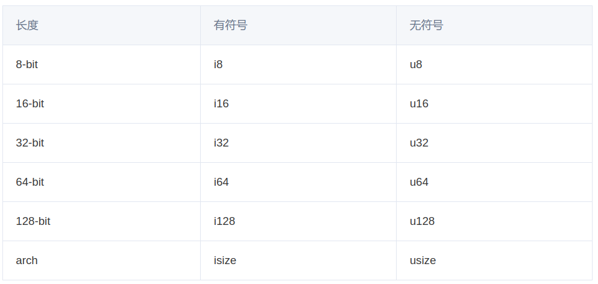

Rust-2-数据类型
引言
这篇文章介绍Rust数据类型，包含Rust中大部分常用数据类型：整形，浮点型，布尔型，字符型（Rust中String与&str两种字符串类型的区别），复合数据类型（元组，数组）的声明与使用方法介绍。
文章目录
0×1.整形
在Rust中，常用的整形如下表所示：
整形分为有符号与无符号两种，在Rust中，用“i前缀+数字”表示有符号，用“u前缀+数字”表示无符号，请看下面的声明实例：
fn main() {
let num_1:u32=100; //声明一个长度为32bit的无符号不可变整形
let mut num_2:i16=500; //声明一个长度为16bit的有符号可变整形
println!("{},{}",num_1,num_2);
num_2*=2;
println!("{},{}",num_1,num_2);
let mut num_3:isize=10000; //声明一个arch有符号整数类型，长度取决于机器架构
println!("{}",num_3);
}
程序输出：
100,500
100,1000
10000
整形长度可以是8、16、32、64、128以及arch，其中，arch长度依赖于运行程序的计算机架构：64位架构上为64-bit，32位架构上为32-bit。
0×2.浮点型
Rust 的浮点数类型是f32和f64，分别占32位和64位，默认类型是 f64。
fn main() {
let mut f1:f32=2.3333; //声明f1、f2、f3都是可变f32类型
let mut f2:f32=2.33;
let mut f3:f32=f2+f1;
println!("{}+{}={}",f1,f2,f3);
let f4=3.33; //默认没有声明，f4、f5、f6都是f64类型
let f5=4.44;
let f6=f4+f5;
println!("{}+{}={}",f4,f5,f6);
//不同的数据类型，例如整形与浮点数要进行计算，必须将整形先转化成浮点型
//通过as运算符，显示的将i7转换成f64类型，f32与f64之间进行运算时同理，也需要先进行转换
let i7=12;
let f8:f64=i7 as f64+f6;
println!("{}",f8);
}
程序输出：
2.3333+2.33=4.6633
3.33+4.44=7.77
19.77
注：使用as运算符将浮点型转换成整型时，会直接砍去小数部分，取整数部分。
0×3.布尔型
Rust中的布尔类型比较简单，请看下面的实例：
fn main() {
let z=true; //隐式声明
let j:bool=false; //显示声明
println!("{} or {}",z,j);
}
程序输出：
true or false
0×4.字符/字符串类型
在Rust中，我们用单引号声明 char 类型，而与之相反的是，使用双引号声明字符串类型。
字符类型的声明与使用：
fn main() {
let s1='a'; //隐式声明char变量
let s2:char='b'; //显示声明
println!("{}|{}",s1,s2);
}
程序输出：
a|b
String类型的声明与使用：
//三种创建字符串变量的方法
fn main() {
let str1="NikkoCat.com".to_string();
let str2=String::from("NikkoCat.com");
let str3:String="NikkoCat.com".into();
println!("{}\n{}\n{}",str1,str2,str3);
}
程序输出：
NikkoCat.com
NikkoCat.com
NikkoCat.com
String类型的数据是可以追加内容的，请看下面的实例：
fn main() {
let mut str1="NikkoCat.com".to_string();
let mut str2=String::from("NikkoCat.com");
let mut str3:String="NikkoCat.com".into();
str1.push('.'); //使用push函数，追加单个字符（char）
str2.push_str(".bk"); //使用push_str函数，追加字符串
str3.push_str(".tar.gz");
println!("{}\n{}\n{}",str1,str2,str3);
}
程序输出：
NikkoCat.com.
NikkoCat.com.bk
NikkoCat.com.tar.gz
除了String类型之外，Rust中还有一个&str类型，也是用来存储字符串的，与String不同，在Rust的语言的设计中，&str被设计成内存地址与长度都是固定的类型，而String被设计成包含了数据指针、数组容量、数据长度等三个主要字段，如果新追加的字符串数据长度在初始申请的内存容量范围内，数据会直接在原有的内存范围内修改，但如果新追加的数据长度超出初始申请的内存容量范围，它可以重新申请更大的内存来存放这些数据，我们可以简单的理解成，String类型用来存储可变长度的字符串，而&str类型可以用来存储只读（不可变长度）的字符串，请看下面关于&str类型的实例：
fn main() {
let s0="NikkoCat.com"; //隐式声明&str类型
let s1:&str="www.NikkoCat.com"; //显示声明
println!("{}\n{}",s0,s1);
}
程序输出：
NikkoCat.com
www.NikkoCat.com
可能有人会想，为什么需要两个不同的字符串类型String与&str，设计者给出的回答是，为了效率，在不需要改变字符串长度的情况下，使用&str来储存字符串，能够提升程序的效率。
String与&str类型之间的转换：
fn main() {
let s0="NikkoCat.com";
let s1:String=s0.to_string(); //可以通过to_string()函数将&str类型转化成String
let s2:&str=&s1; //而String类型转化成&str类型，只需要使用&String即可
println!("{}\n{}\n{}",s0,s1,s2);
}
程序输出：
NikkoCat.com
NikkoCat.com
NikkoCat.com
0×5.元组
在Rust中元组使用()来声明，并且元组的长度是不可变的，与数组不同，一个元组中可以存储不同类型的数据，请看下面的实例：
fn main() {
//创建元组的两种方式，隐式和显示声明元组中每个元素的类型
let tup1=('a',12,2.33,"NikkoCat.com");
let tup2:(f64,u32,&str)=(2.33,11,"NikkoCat.com");
//读取元组中值的两种方式
//第一种方式，元组中有多少元素，就需要多少变量来接收
//使用x、y、z三个变量来读取tup2元组中三个元素
let (x,y,z)=tup2;
//第二种方式，使用“元组名称.index”的方式，分别读取tup1中索引值为0，1，2，3的元素
println!("{}|{}|{}|{}",tup1.0,tup1.1,tup1.2,tup1.3);
println!("{}|{}|{}",x,y,z);
}
程序输出：
a|12|2.33|NikkoCat.com
2.33|11|NikkoCat.com
0×6.数组
不同于元组，Rust中同一个数组中包含的元素类型必须相同，使用[]来声明一个数组，请看下面的实例：
不可变长度数组：
fn main() {
//三种方式声明数组
//第一种：没有长度限制，程序自动识别数组类型为&str
let a=["a", "b", "c", "d", "e"];
//第二种：定义数组类型为u32，并且数组长度为3（包含三个元素）
let b:[u32;3]=[1,2,3];
let c=[3;4];
let x:&str=a[2];
let y:u32=b[0];
let z=c[1];
println!("{}\n{}\n{}",x,y,z)
}
程序输出：
c
1
3
可变长度数组：
fn main() {
//第一种方式，创建一个u32数据类型的可变长度空数组
let mut a:Vec<u32>=Vec::new();
//第二种方式，使用vec!宏直接创建可变长度数组
let mut b=vec!["a", "b", "c", "d", "e", "f"];
//在数组a的末尾添加数据
a.push(1);
a.push(2);
//在数组b的末尾添加数据
b.push("gg");
println!("{:?}", b); //打印数组b
//移除b数组中index为0的元素
b.remove(0);
b.pop(); //移除b数组中最后一个元素
//也可以用这种方式，移除b中最后一个元素，b.len()返回数组长度，长度减1，就得到了最后一个元素的索引
b.remove(b.len()-1);
println!("{:?}", a);
println!("{:?}", b);
}
程序输出：
["a", "b", "c", "d", "e", "f", "gg"]
[1, 2]
["b", "c", "d", "e"]
注：在println中{:?}与{:#?}都以调试的方式能打印出对应变量的数据结构，后者更加的直观。